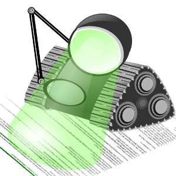
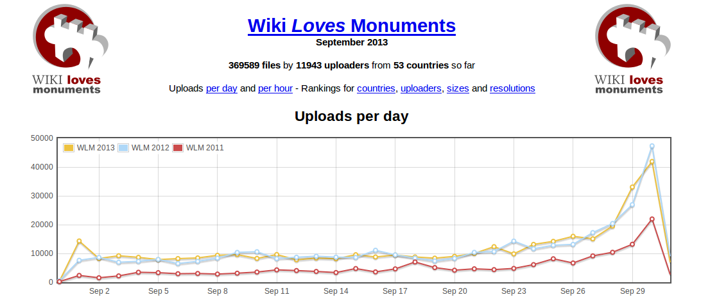
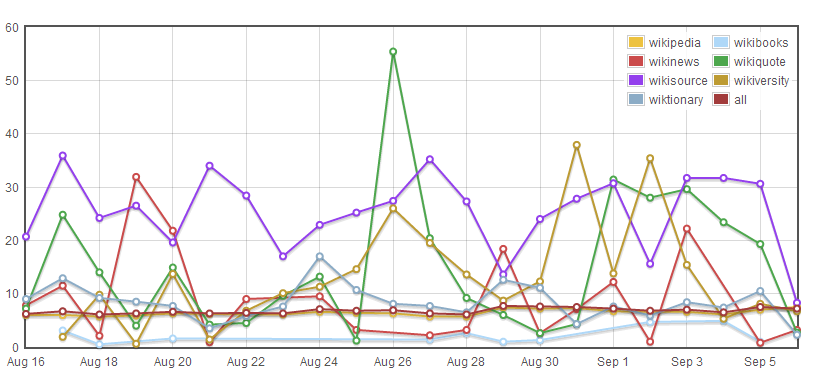

Te doy la bienvenida a mi web personal. Este sitio lo uso para recopilar información, tomar notas sobre todos los temas que me interesan y difundir mis ideas y proyectos. Es un trabajo en continuo desarrollo, por ello las secciones pueden estar incompletas o contener herrores. Si encuentras algo que te resulte de interés, fantástico. Si quieres, puedes contactar conmigo.
Welcome to my website! I use this place to compile information, take some notes about all topics of my interest and spread the word about my ideas and projects. This is a work in-progress, so sections may be incomplete or contain msitakes. If you find anything of your interest, great. You can contact me if you want.
| Tabla de contenidos |
|---|

Desde siempre me ha gustado mirar al cielo por la noche, hay algo ahí arriba que me llama la atención. La astronomía se puede dividir en dos partes, la astronomía de observación (parte práctica) y la astronomía teórica (teorías, explicaciones, de cómo funciona el universo). Ha habido épocas que me ha dado más por curiosear libros de astronomía y otros momentos en los que he observado el cielo.
No tengo telescopio aunque sí unos prismáticos 8-24x50 con los que se puede explorar el cielo rápidamente. En el cielo de noche se pueden ver muchas cosas, incluso a ojo desnudo, como los planetas Mercurio, Venus, Marte, Júpiter y Saturno, satélites Iridium o los pasos casi a diario de la ISS. Solo hay que saber dónde mirar. En el blog intentaré dar algunas indicaciones para que tú también puedas ver todas esas cosas.
En la imagen: Venus visto al atardecer desde el Parque de Los Toruños, provincia de Cádiz. Varios planetas son visibles en distintas épocas del año y se suelen confundir con estrellas. Así que probablemente hayas visto algún planeta a simple vista, sin saberlo.
Estoy descubriendo el cine contestatario, cine político y tercer cine. A continuación enumero películas de este estilo que he visto, ordenadas por director:
Otras películas sin tanta carga política:
Y finalmente películas para pasar el rato:

Me encanta hacer fotos, sobre todo de monumentos. Tras varias cámaras compactas, en 2012 me compré mi primera reflex, una NIKON D3100. La diferencia en calidad es notable, aunque también es más difícil de usar.
Aún estoy aprendiendo a manejar todas sus funciones, ya que a pesar de que tiene un modo automático, lo suyo es hacerlo en manual y exprimir toda su capacidad.
Puedes ver muchas de mis fotografías en perfil de Flickr, también ordenadas por colecciones y álbumes.
En la imagen: Vistas desde la Torre de Poniente de la Catedral de Cádiz. Hace poco la cerraron y no sé si la volveran a hacer visitable.
La información siempre está en peligro de desaparecer y la información digital todavía más.
Los soportes no son eternos (la vida media de un CD dista mucho de ser 100 años como decían). Los discos duros duran apenas unos años antes de empezar a tener sectores defectuosos.
La tecnología avanza rápidamente dejando muchos formatos inaccesibles por la llegada de otros nuevos, tanto software (¿os acordáis de los procesadores de textos de MS-DOS como WordStar o WordPerfect?), como hardware (¿os acordáis de los discos de 5 1/4?).
Y todo esto sin contar que hoy día subimos mucho contenido a Internet a servicios como YouTube, Flickr, o nuestros propios correos de Gmail, sin plantearnos que son servicios que proporciona una empresa y que un día dejarán de existir. Si no tenemos copias de seguridad de nuestros datos, los perderemos el día que cierren el servicio o nos cierren la cuenta.
Desde que me registré en Wikipedia en 2005 no he parado de contribuir a esta enciclopedia y también a otros wikis menos conocidos. Estos proyectos tienen una importante función en la recopilación, preservación y difusión del conocimiento, y procuro dedicar parte de mi tiempo en ellos.
Como editor de Wikipedia he aportado artículos, fotografías y algunas herramientas. A continuación detallo un poco más mi aportaciones.
| Herramienta | Código | Descripción | Imagen |
|---|---|---|---|
| AVBOT | Google Code | Español: AVBOT es un bot anti-vandalismo para wikis MediaWiki. Está desarrollado en Python, usando pywikipediabot e irclib. AVBOT ha estado funcionando en Wikipedia en español desde 2008, habiendo revertido más de 250,000 vandalismos, y hay varios clones controlados por otros usuarios. En 2009, el proyecto fue galardonado con el Premio Nacional al "Mejor proyecto comunitario" en el III Concurso Universitario de Software Libre. English: AVBOT is an anti-vandalism bot for MediaWiki wikis. It is developed in Python, using pywikipediabot and irclib. AVBOT has been working in Spanish Wikipedia from 2008, it has reverted more than 250,000 vandalism edits, and it has several clones managed by other users. In 2009, this project was awarded with Premio Nacional al "Mejor proyecto comunitario" in the III Concurso Universitario de Software Libre. |
 |
| Commons Coverage | |||
| Images for bio | |||
| wikistatistics-mediawiki-extension | GitHub | ||
| wikitweets | GitHub | ||
| WLM maps | GitHub |  |
|
| WLM stats | GitHub |  | |
| wmcharts | GitHub |  | |
| wmcounter | GitHub |  |
This site is powered by GitHub pages
{kind=link}
{kind=link}